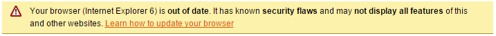

AngularJS directive for Browser-Update.org, a service that unobtrusively informs your visitors to switch to a newer browser when browsing with an outdated one.
Simplest usage possible! Just add the directive in your html page (preferably, just below the <body> tag).
<browser-update></browser-update>
This displays a notification bar that looks like this:
Note: With the minimal code, you will only see the notification bar if you are actually browsing with an outdated browser.
A little more complete usage, with some options given via hardcoded values.
<browser-update
versions="{i:8,f:8,o:9.63,s:2,c:8}" reminder="1"
always-show-bar="true" new-window="false"
notification-text="This is my custom message">
</browser-update>
The following options are available:
Another usage, with some options given via scope values.
<div ng-controller="MyCtrl">
<browser-update
versions="versions" reminder="reminder"
new-window="newWindow"
always-show-bar="alwaysShowBar"
on-notification-bar-shown="onNotificationBarShown(null)"
on-notification-bar-clicked="onNotificationBarClicked(null)">
</browser-update>
</div>
<script >
angular.module('demoApp', [])
.controller('MyCtrl', ['$scope', '$window',
function ($scope, $window) {
$scope.versions = {i:8,f:8,o:9.63,s:2,c:8};
$scope.language = 'it';
$scope.reminder = 1;
$scope.newWindow= true;
$scope.alwaysShowBar= true;
//callback functions
$scope.onNotificationBarShown= function(data){};
$scope.onNotificationBarClicked= function(data){
$window.alert('Notification bar clicked!');};
}]);
</script>
If you're not happy with the default style, Browser-Update.org let you customize the appearance of the notification bar via those css-rules.
<browser-update always-show-bar="true"></browser-update>
body .buorg {font-size:20px}
body .buorg {
position:absolute;
width:100%;
top:0px;
left:0px;
border-bottom:1px solid #A29330;
background:#FDF2AB no-repeat 1em 0.55em url(http://browser-update.org/img/dialog-warning.gif);\
text-align:left;
cursor:pointer;
font-family: Arial,Helvetica,sans-serif; color:#000;
font-size: 12px;
}
body .buorg div {
padding:5px 36px 5px 40px;
}
body .buorg a {
color:#E25600;
}
#buorgclose {
position: absolute;
right: .5em;
top:.2em;
height: 20px;
width: 12px;
font-weight: bold;
font-size:14px;
padding:0;
}